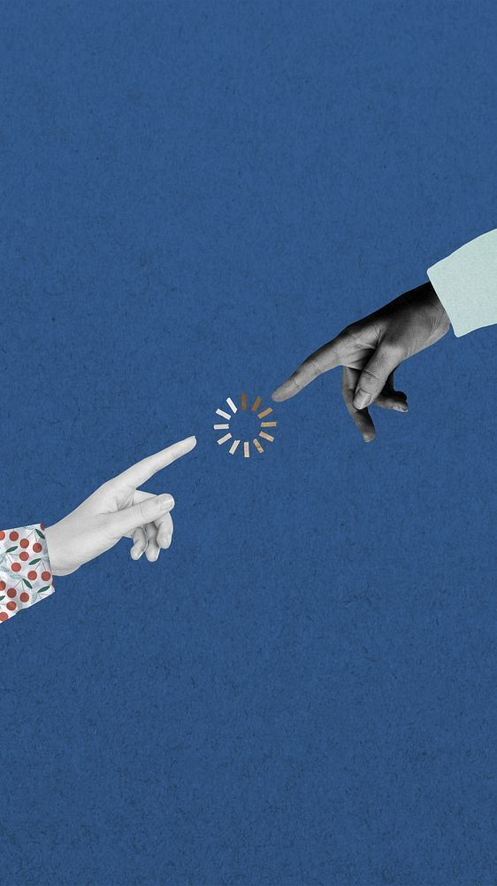

About
Between systems
and feeling.
I'm Ashley / Yeseul, a product-minded creative technologist exploring how AI, interaction, and visual systems can make digital experiences feel more human.
My background is in product management, where I learned how to turn ambiguity into structure and ideas into usable experiences. Through SDA Bocconi's EMiLUX Executive Program, I'm expanding that practice into luxury, brand strategy, and heritage. Studying the invisible value that makes people desire, trust, keep, and remember something.
I'm interested in the space where technology becomes less cold, brands become more meaningful, and digital experiences begin to feel personal.
